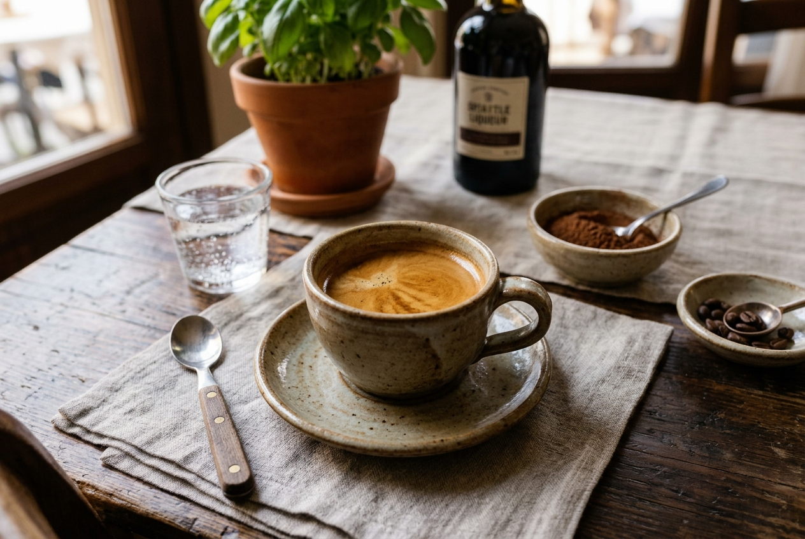
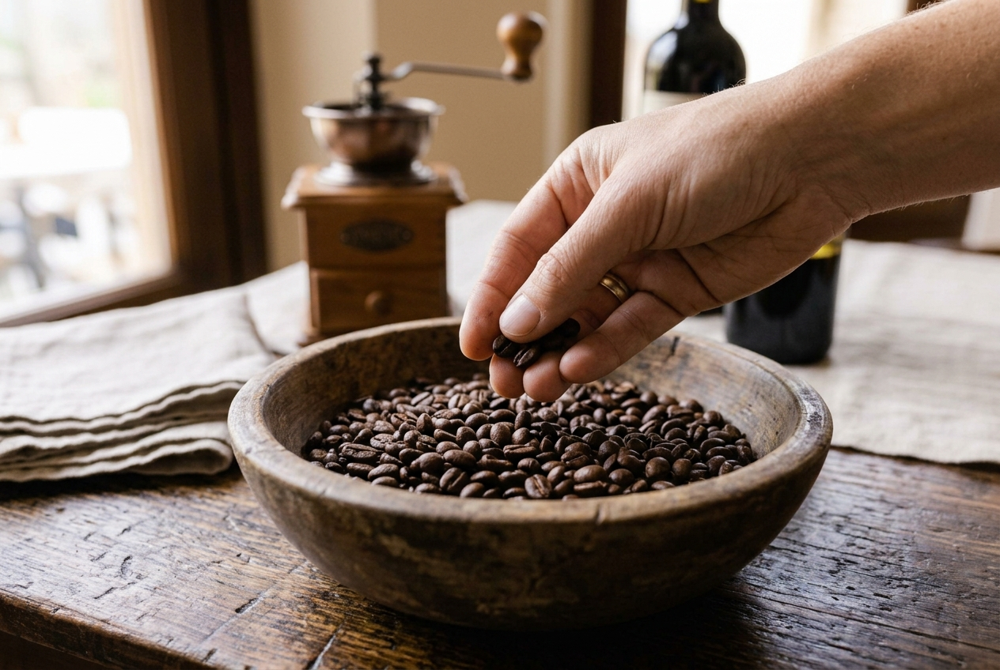
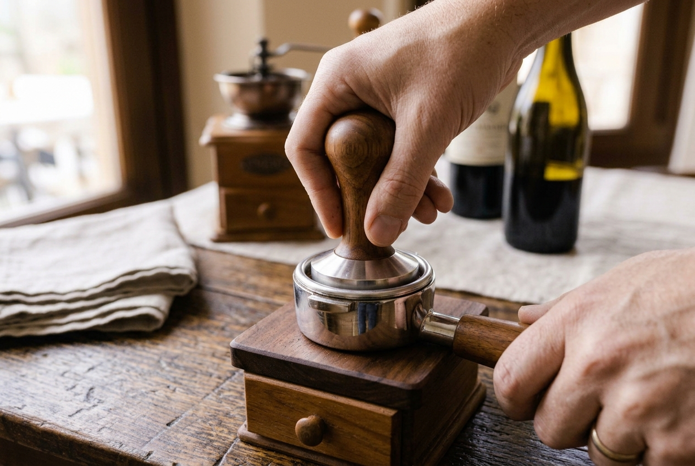
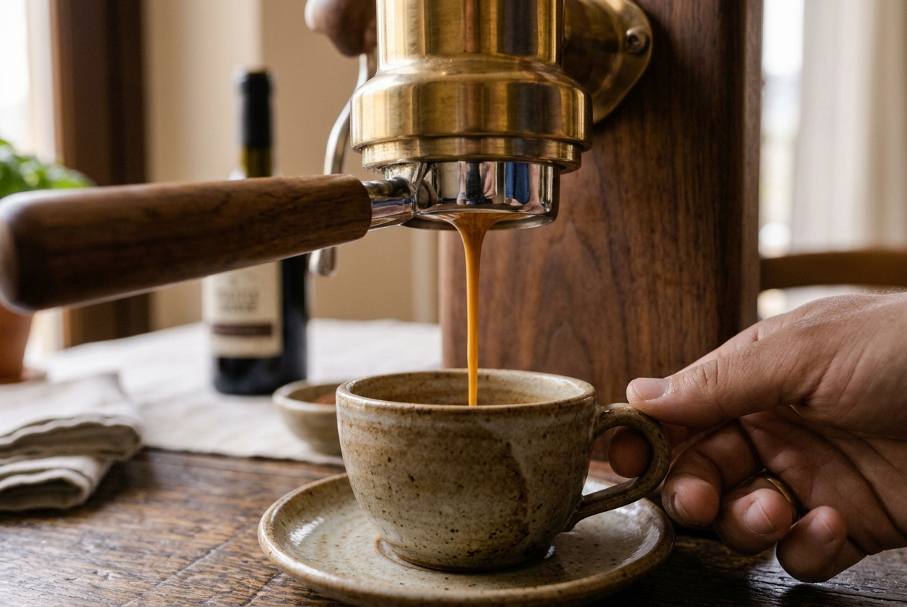

Café Expreso Perfecto

El café expreso perfecto es el pilar fundamental de la cultura cafetera italiana. Aunque parece una preparación sumamente sencilla debido a la brevedad de sus ingredientes, su verdadero éxito radica en la calidad de los granos utilizados y en el control de la presión y la temperatura de extracción, la cual debe fusionarse delicadamente con los aceites esenciales del café para coronarse con una capa de crema densa y persistente.
Para conseguir una taza equilibrada y sin exceso de amargor, los baristas tradicionales recomiendan utilizar granos de café 100% arábica de tueste medio, recién molidos antes de la preparación. La extracción debe realizarse de manera precisa, permitiendo que el agua fluya de forma uniforme a través de la molienda compactada, extrayendo notas aromáticas complejas que se potencian en el instante de servir en una taza precalentada.
Finalmente, el secreto técnico definitivo consiste en controlar milimétricamente el tiempo y el volumen de extracción para obtener el codiciado "cuore" del expreso. Este proceso, conocido en el mundo del café como la extracción ideal, genera una emulsión perfecta de la crema que recubre la superficie uniformemente, garantizando una bebida aromática, intensa y llena de sabor tradicional en cada sorbo.
El Proceso Paso a Paso



Videoguía Demostrativa
A continuación, puedes visualizar una demostración en vídeo que detalla las técnicas profesionales de manipulación de la pasta y ligación de salsas tradicionales en cocina: